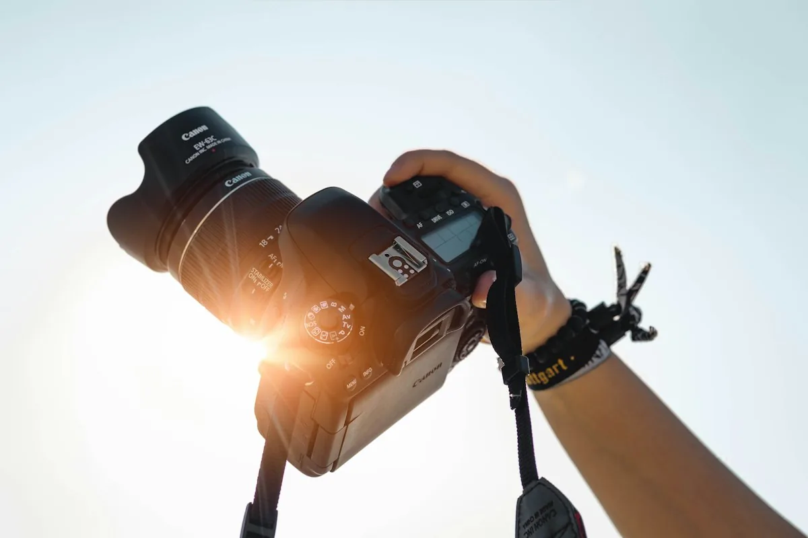

Julian Vance
"To make a portrait is to engage in a silent contract of trust: to strip away pretense until only truth remains."
Born to architectural preservationists in Zurich and raised across Europe, Julian developed an early reverence for structural geometry, natural illumination, and human vulnerability. After completing fine art studies in London, he founded Lens & Light Studio with a singular tenet: photographs should feel like memory itself — tactile, tender, and unembellished.
Over the last twelve years, Julian has photographed royal estates in England, secluded clifftop vows in Santorini, and high-fashion collections in Paris and Milan. His documentary sensibility combines classical fine art poise with raw, unrehearsed emotion.
The Artistic Philosophy
The three fundamental values shaping every shutter actuation at Lens & Light Studio.
I. Available Natural Light
We reject blinding flashes and synthetic studio rigs whenever possible. Working with low sun, amber dusk, and chiaroscuro shadows preserves the genuine atmosphere of the day.
II. Documentary Restraint
We do not direct your wedding like a film set. We observe quietly, allowing raw tears, joyful laughter, and whispered intimacies to unfold without interference or staged poses.
III. Archival Permanence
Trends and hyper-saturated filters come and go. Our tonal palettes are calibrated to resemble classic Kodak and Fuji medium format films, ensuring your imagery remains timeless five decades from now.
Optics & Hardware
We believe equipment should disappear in the hand, serving only as an intuitive bridge between eye and soul.
Bodies & Sensors
Leica M11 & Hasselblad 907X 50C
Minimalist, silent rangefinder and medium-format systems engineered for exceptional dynamic range and true-to-life skin tones.
Prime Glass
Leica Summilux-M 35mm & 50mm f/1.4 ASPH
Manual prime lenses renowned worldwide for poetic subject isolation, soft painterly transitions, and luminous flare control.
Analog Medium Format
Contax 645 • Zeiss Planar 80mm f/2
Loaded with Kodak Portra 400 and Ilford HP5+ for clients who cherish authentic silver halide grain and nostalgic film characteristics.
Post-Production Lab
EIZO ColorEdge 4K • Hahnemühle FineArt Paper
Hardware-calibrated color grading paired with 100% cotton rag archival paper for exhibition-grade prints that last generations.
Selected Exhibitions & Publications
Kinfolk Gallery • Copenhagen
Solo Exhibition: "Shadow & Stone" (2025)
Vogue Weddings International
Feature: "Ten Most Poetic Destination Shoots" (2024)
Rangefinder Magazine
Winner: International Fine Art Portrait Award (2023)